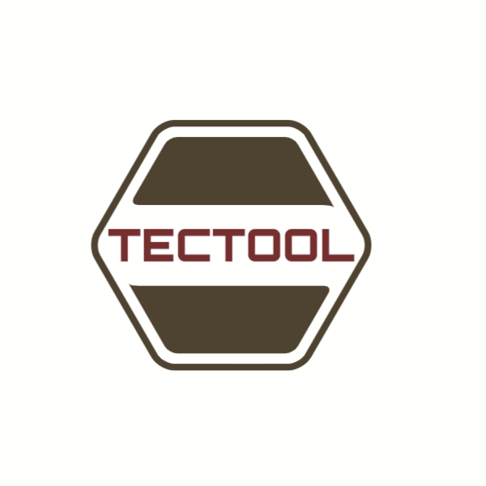

Manufacturing of Rotary Dies and Print cylinders 
THE ONLY TOOLING YOU CAN TRUST
CNC programming (Computer Numerical Control Programming)
is utilized by manufacturers to create program
instructions for computers to control a machine tool.
CNC is highly involved in the manufacturing process
and
improves automation as well as flexibility.

CNC programming (Computer Numerical Control Programming)
is utilized by manufacturers to create program
instructions for computers to control a machine tool.
CNC is highly involved in the manufacturing process
and improves
automation as well as flexibility.

CNC programming (Computer Numerical Control Programming)
is utilized by manufacturers to create program
instructions for computers to control a machine tool.
CNC is highly involved in the manufacturing process
and
improves automation as well as flexibility.

CNC programming (Computer Numerical Control Programming)
is utilized by manufacturers to create program
instructions for computers to control a machine tool.
CNC is highly involved in the manufacturing process
and
improves automation as well as flexibility.
TRADING HOURS
Mon : 8am-5pm
Tue: 8am-5pm
Wed : 8am-5pm
Thu : 8am-5pm
Fri : 8am-5pm
CONTACT INFO
Unit 6
144 Banket street
Hillbrow
(019) 123 0012